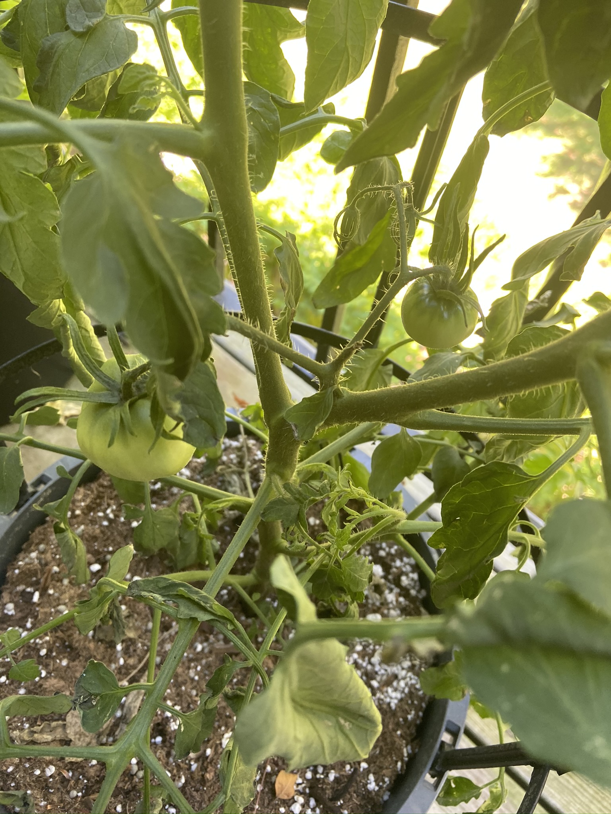

I am person that cherish the beauty of plants and how they improve our lives. I loved plants since I was young.
When I was younger, I used to watch my grandfather in his big back yard plant all these amazing vegetables.
He loved that he cooked what he created and saved money by doing so.
I wanted to do the same thing, but I never thought I could because I don’t own a home. I decided that I was going to take a chance and see what happens.
About the Journey
Unfortunately, a few months ago almost everything shut down as a result of Covid-19. People were buying food so quickly and there was a shortage of food and personal items.
This situation made me nervous, so I decided that I wanted to plant my own food.
Therefore, I started doing some research and watching some YouTube videos about gardening in small spaces and planting with containers and started my own gardening journey.
I knew that this process was not going to be easy. I do not have a "green thumb", but I wanted to try my best.
How did I get Started?
I did research on what plants that would grow best indoors and on my balcony. Unfortunately, there is not a lot of bright light in my apartment so I had to improvise with using
plant lights to help with the sunlight. I also could not afford expensive planters so I used dollar tree planters and buckets from home depot and Lowes that were affordable. I drilled holes
in the bottom for drainage.

Pros and Cons of Gardening
Gardening during this time has been really relaxing. Its nice to be able to see your seedlings and start plants to grow and mature. Its also nice to harvest your plants for food.
Unfortunately, I have dealt with a lot of cons with my plants. I have dealt with my plants getting moldy or having root rot from over watering. I had issues with pesky bugs that want to eat my plants.
I also tried to grow seeds that never produced anything. But that is what growing plants are all about. That is the journey.
References
I have researched plenty of gardeners to guide me on my journey and it helped me a lot. Here are a few sites that were great during my journey: Small Town Gardener by Marianne Willburn and You Grow Girl by Gayla Trail.
But there was one YouTuber that I enjoyed watching and learning from. His YouTube name is LeadFarmer73. He is funny and very knowledgeable. He keeps the process of gardening very simple. He grows plants indoors, in containers, and on his land.
If you want to get more information definitely subscribe to his channel on YouTube and Facebook.